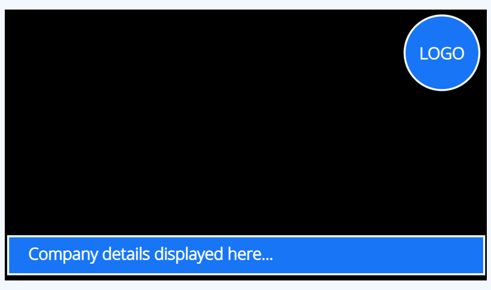
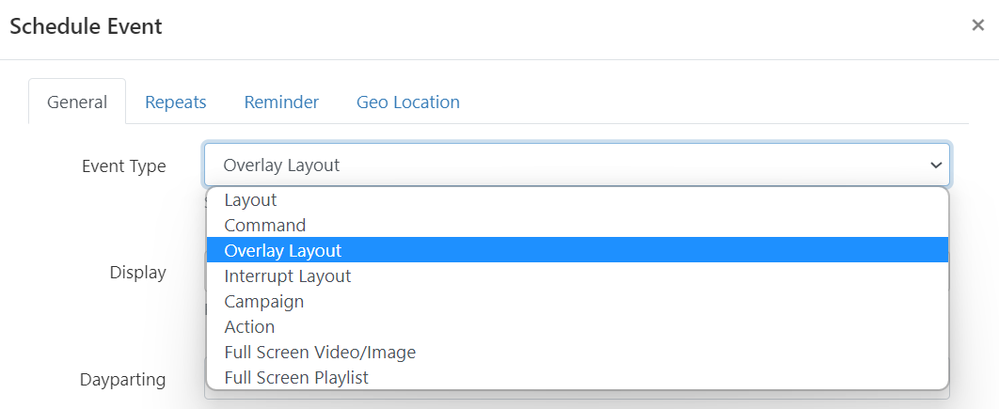

Overlay Layouts
Create an Overlay Layout to Schedule to show on top of other Layouts in the schedule.
Overlay Layouts can also be Scheduled to be used with Layouts inside a Campaign.
Overlay Layouts remain on top while your normal scheduled content changes underneath. This is particularly useful for logos, important information or emergency notices for example.

Create an Overlay Layout
Overlay Layouts are created in exactly the same way as all other Layouts. Add content to fit around your existing designs so that your Overlay Layout can “sit on top” of other Layouts that are Scheduled at the same time as the Overlay. Your Overlay Layout will display its all important content whilst the Layouts “underneath” play in rotation.
Senevo will not render the background on Players when a Layout is scheduled as an Overlay Layout.
Scheduling
Overlay Layouts are selected as an Event type when Scheduling an Event and will behave differently to standard Layouts when Scheduled as an Overlay.

-
Refreshing Content
When an Overlay Layout is scheduled it will render the Media content once and will not show refreshed content.
A workaround to this would be to add a second Media Item to the Overlay Layout so that it loads item 2 and then reloads item 1 (with now refreshed content). This is particularly useful when creating an Overlay Layout which includes the Calendar or Ticker Widgets for example.
-
Scheduling multiple Overlays
Overlay Layouts do not appear one after the other in Scheduling but instead will stack.
Scenario:
2 Media items are required to ‘Overlay’ other Scheduled Events in the same area of the screen.
Rather than creating 2 Overlay Layouts with the assigned Media, only 1 Overlay Layout should be created containing a Playlist which would then contain the 2 Media items to cycle through.